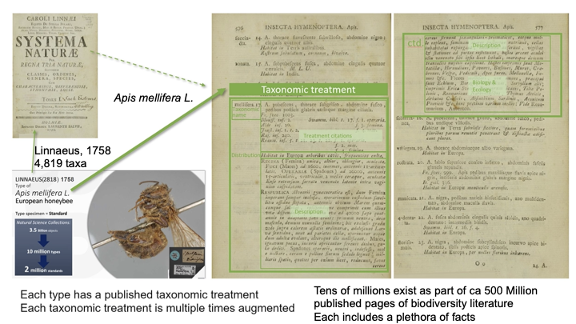

The taxonomic treatments from Linnaeus’ Systema Naturae, 1758, 10th edition, liberated

Taxonomic treatment. The taxonomic treatment is a well defined part of a publication about a particular taxon, in this case of the honey bee Apis mellifera, described by Linnaeus 1758 on page 576-577. It is based on the implicitly cited specimens in his reference collection.
A milestone in the development of modern biology was the introduction of the standardization resulting from comparative and reference works. This led to a rapidly growing corpus of knowledge by learning from, referencing of, and building on previous work, today known as the data life cycle.
Carolus Linnaeus added to the data life cycle in multiple ways, and because of this, became the founder of modern taxonomy. He produced 12 editions of Systema Naturae and only after the tenth edition did his ideas stabilize to a degree sufficient to serve as a solid foundation. That is why the 10th edition of “Systema naturae per regna tria naturae: secundum classes, ordines, genera, species, cum characteribus, differentiis, synonymis, locis.” has been selected as the starting point of zoological nomenclature.
Linnaeus is celebrated for his introduction of the Latin binomen, whereby each species is given a generic and a species name, such as Apis mellifera for the honey bee. This standard is still the basis for naming species, though with inevitable typographical errors as well as cryptic abbreviations that may be easily comprehended by trained humans; but pose challenges to processing by computers. This is why something more robust, such as a globally unique persistent identifier is needed for a more seamless access.
A second important aspect of Linnaeus' work was his effort to build a monograph or catalogue that included all the currently existing knowledge about animals, following his parallel work on plants.
A third important aspect was to present the species in a taxonomic hierarchy, whereby he used class, order and genus level, mentioned already in the title of the book “…secundum classes, ordines, genera”.
A fourth forgotten aspect announced in the title “..cum characteribus, differentiis, synonymis, locis.” is the provision of a highly standardized taxonomic treatment for each species listed. The taxonomic treatment, the clearly delimited part of the publication, including a diagnosis of the taxon, a reference to previous work, an extended description, a note on the distribution and habitat are the fundamental units of the knowledge system that Linnaeus created.
The reference to previous treatments, though irrelevant in Linnaeus, because of the arbitrarily chosen starting date of modern taxonomy starts with his 10th edition, is the prerequisite to understand the development of the knowledge about a species. These treatment citations are not only links, but they also have other functions. They may cite and thus augment the cited treatment with new data, or they may state that a species is actually a synonym of another one, and thus end the life of a taxonomic name, but not the data therein, which is inherited by the senior synonym.
Ecological description can include links to other species, such as whether these are prey or predator, and thus define interactions between the species.
Systema Naturae is based on Linnaeus’ reference collection, the first types in Zoology. (the insects are now housed at the Linnean Society in London). Making these implicit links between the treatment and the underlying types explicit is planned.
Systema Naturae is without doubt the most cited publication in science, since each name usage in the sciences of one of the 4,819 names created refers to this volume. However the real number of citations is opaque because of the convention to not cite the publication of the authority of a name.
This conversion of Linnaeus 1758 has been made possible through the scan of the original work by the Missouri Botanical Garden, accessible via the Biodiversity Heritage Library and the Internet Archive, Dave Remsen, who converted the scan into text, and Richard Pyle from Zoobank who spent uncounted hours to convert the text into a database. He also added the Zoobank ID for each taxonomic name. Plazi converted this database into treatments, and uploaded them to TreatmentBank and the Biodiversity Literature Repository (BLR) where each taxon such as the honey bee has its own DOI.
By uploading of the treatment to BLR as a taxonomic treatment data type a Digital Object Identifier (DOI) is minted allowing the citation of a treatment similar to citing a scholarly publication. For Apis mellifera it is 10.5281/zenodo.3922706.
Since Zoobank and Treatmenbank share the universally unique identifier (UUID: e.g. 9082C709-6347-4768-A0DC-27DC44400CB2 for Apis mellifera) for the same taxon, switching from the nomenclatural name to the treatment is just changing the URL from zoobank.org/NomenclaturalActs/ to treatment.plazi.org/id/.
The treatments and names in Systema Naturae are already reused by GBIF, and with that the first complete set of taxonomic names known at a given time added to the GBIF taxonomic backbone. It allows now to add protologs (the first taxonomic treatments of a new taxon) to all taxonomic treatments that cite directly or via intermediary name Linnaeus 1758 names.
The conversion is a contribution the the CETAF-Covid19 task force. Seven bat species have been known in 1758: Vespertilio spectrum, V. pespicillatus, V. vampyrus, V. spasma, V. auritus, V. leporinus and V. murinus.
Questions, suggestions or other contributions can be posted on Plazi community.